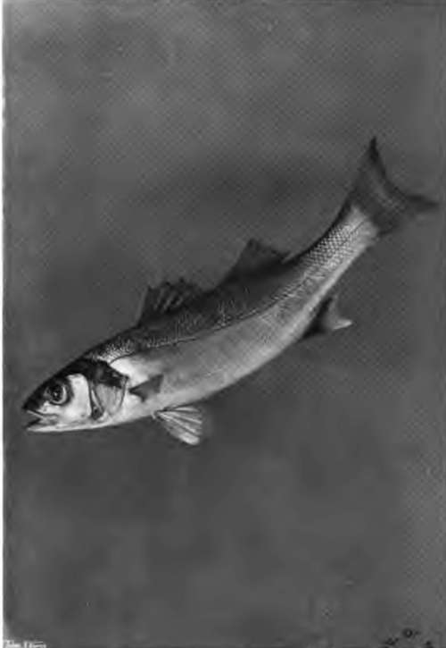
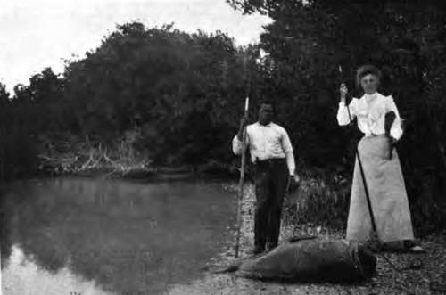

The Sea-Bass And Sea-Perch (Serranida)
Description
This section is from the book "Fishing", by Horace G. Hutchinson. Also available from Amazon: Fishing.
The Sea-Bass And Sea-Perch (Serranida)
This family, one of the largest of the class Pisces, and formed almost exclusively of marine species, is very nearly related to the true perches; the characters on which they have been separated from them arc mainly osteological and need not be explained in a work of this kind. Suffice it to say that the eyeball is supported, in the Serranidae, by a bony process of the second suborbital bone, called a subocular shelf, of which there is no trace in the true perches, a character which can be readily ascertained on any specimen, even without dissection, when bnce understood. The black bass of the fresh-waters .of America noticed above, which bear no special affinity to our sea-bass, are more nearly related to the fresh-water perches, and, like them, lack the subocular shelf.
The Serranidse are typical Acanthopterygians with the air-bladder, when present, as is usually the case, closed, with the anterior portion of the dorsal fin formed of pungent spines, and with the ventral fins inserted below the pectorals and composed of 1 spine and 5 soft, branched rays. Some of the bones of the head, as the preorbital and the elements of the gill-cover, are also frequently serrate or armed with more or less strong spines.
In the sea-bass of our coasts and estuaries (Morone labrax, often called Labrax lupus), the dorsal fin is divided into two distinct parts, the anterior formed of 8 to 10 spines, the posterior of 1 spine and 12 soft rays; the anal fin, which is opposed to the second dorsal, is formed of 3 spines and 10 to 12 soft rays. The body is elongate and compressed, covered with rather small, rough scales, there being 65 to 80 in the lateral line; the mouth is large and cleft to below the eye; the prseopercle, or bone limiting the cheek towards the gill-cover, is serrated, the seme on its lower border being larger, more widely set, and directed forwards; the gill-cover is armed with strong spines. The colour is silvery, more grey on the back, the young sometimes with scattered blackish dots; a dark spot on the gill-cover. The sea-bass often attains a length of 3 feet and a weight of 10 lbs. Yarrell alludes to a specimen weighing 28 lbs.
Morone labrax, the sea-wolf of the Greeks, a voracious and cunning fish, of excellent quality, and much prized in France, where it is known as "Bars" and "Loup," inhabits the coasts of Europe, from Norway to the Mediterranean. It is rare in Scotland north of the Firth of Forth, and is not recorded from the Orkneys and Shetland. But it is common in the English Channel and on the south coast of Ireland. According to Couch and Day, the breeding takes place in summer on our southern coast, but Raffaele found the ripe ova in the Mediterranean from January to the beginning of March.
The sea-bass is represented on the east coast of America by a close ally, the striped bass, or rock-fish (Morone lineata), which grows to a length of 6 feet, and is one of the most important game fishes of America. It is abundant in the estuaries of great rivers from the St. Lawrence to North Carolina, but becomes rather rare farther south and in the Gulf of Mexico. Unlike its European relative, it is strictly an anadromous fish, living chiefly in salt or brackish water, and entering fresh water to spawn.
We have stated above that the Serranidae are almost exclusively marine. Among the few exceptions to the rule are two other near allies of the sea-bass, the white bass (Morone mulAlineatd) and the yellow bass (M. interruptd), excellent game and food fishes of the great lakes and rivers of North America; they grow to about 18 inches.
The sea-perches are represented on our southwest coast by three species: Serranus cabrilla, Poly-prion americanus, and Epinephelus aneus. These fishes are of no importance to the angler, but as it is not generally known that some members of this family are normally hermaphrodite, it may be interesting to point out that the first of the above-named presents this condition, each of the two genital glands being divided into a testicular and an ovarian portion, which ripen simultaneously, thus rendering auto-fecundation perfectly possible.
Anglers in Florida are familiar with several species of the genus Epinephelus, known as groupers and jew-fish, many being remarkable for their vivid colours or huge size. The spinous and the soft portions of the dorsal fin are continuous instead of being separated by a notch or short interspace as in the perch and sea-bass, and some of the teeth in the jaws are hinged at the base and depressible. Most of them are excellent for food, the better kinds being sold at from twelve to fifteen cents a pound. The red grouper (E. morio) is the most abundant and best-known species of the genus: it is olive-grey or pale brown, with darker brown marblings, with the lower part of the head and breast usually red or salmon-colour, the inside of the mouth posteriorly bright orange; it reaches a length of 2 or 3 feet, and a weight of 20 to 40 lbs. The black grouper (E. nigritus), varying from chocolate-brown to blackish grey, and without markings or with faint blotches, is an immense fish, reaching a length of 6 feet and a weight of 500 lbs. Another giant of the Florida coast is the spotted jew-fish (E. itaiara) of about the same size as the black grouper, and remarkable for its very broad, depressed head ; although called "spotted," the adults are nearly uniform brown, the spots or bands, which are distinct in the young, disappearing with age.
Another monster fish, which gives great sport to the angler, is the Californian jew-fish, or black sea-bass, Stereolepis gigas. It resembles the Florida jew-fish in shape, but differs in having the spinous dorsal fin distinct from the soft. At Avalon, in Southern California, where the American Tuna Club has its headquarters-the club consisting of some 300 members of any nationality-the tuna fishing lasts only from May to the end of September, after which time the black sea-bass is the chief objective of the sportsman, the aim being to catch these immense fish with as light a tackle as possible. Stereolepis attains a length of 7 feet and a weight of 500 lbs. Professor C. F. Holder, who has paid special attention to the habits of this fish, says: " It is a bottom feeder, and is fished for on the edge of the kelp in 30 or 40 feet of water. The strike comes as a nibble, but when hooked the fish is iway with a rush that has been known to demoralise experienced anglers. I have seen a 200-lb. fish snap the largest shark-line like a thread, and large specimens straighten out an iron shark-hook; yet the skilled wielders of the rod catch these giants of the tribe with a line that is not larger than some eyeglass cords."
53.- Bass.
54.- Jew Fish-florida.
Similar giant sea-perches occur on the coasts of South America, of India, of Japan, and of New South Wales. The sheepshead and sea bream (Sparida), and the drummers, squeteagues, and croakers (Scianida), representatives of families nearly related to the Serranida, are some of the fishes most familiar to the angler in Florida waters.
Continue to: